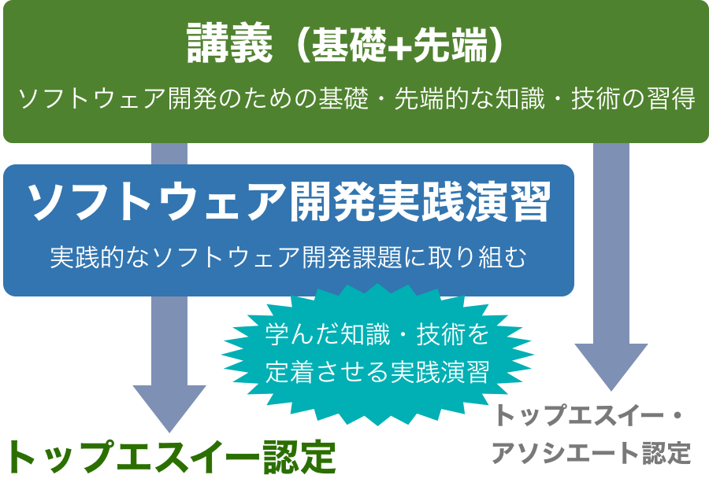
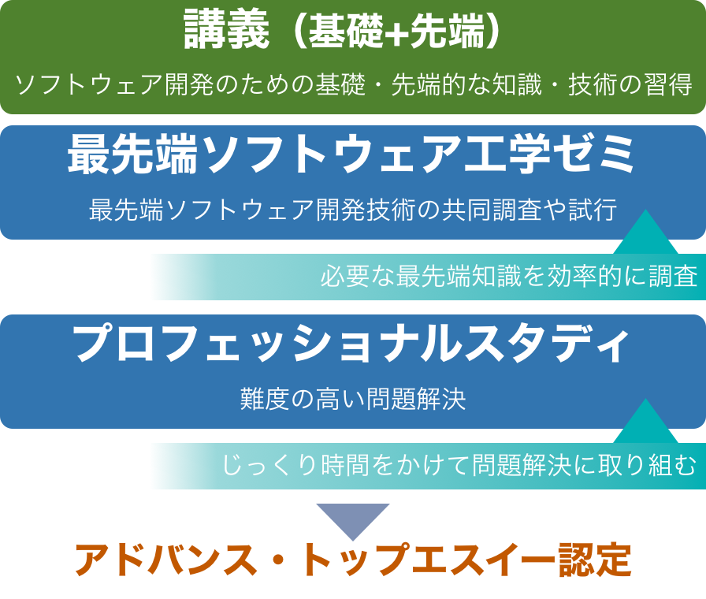

トップエスイーコース
ソフトウェア工学の基礎技術修得に特化し
将来を生き抜くための基礎技術を身につけるコース

トップエスイーコースでは，講義と「ソフトウェア開発実践演習」を通じ，ソフトウェア工学の基礎技術を学ぶことができます．40を超える講義では，最先端の話題から基礎として重要な内容を幅広くカバーしており，講義と演習を通じて学習します．多くの講義では演習を重視しており，学習した結果をその場で試してみたり，グループワークで様々な意見を聞くことができるなど，演習を通じた能力のレベルアップや幅広い対応を支援します．
「ソフトウェア開発実践演習」は，ソフトウェア開発に関して実課題に取り組み，講義等で学んだ技術を使って解決する演習です．講義の演習よりも長い時間を費やすより困難な課題に取り組むことで，学習結果の応用を視野に入れた学習過程をご提供します．
トップエスイー修了要件
- 講義科目を履修し10単位以上の単位を取得すること
- 「ソフトウェア開発実践演習」を行い審査に合格すること
講義
様々な手法や技術を学習するために，講義科目を履修できます．社会人の方の便宜を図り，夕方から夜の時間帯，場合によっては休日に講義を受け，演習に取り組むというスタイルをとっています．科目を履修して合格点を取ると，単位が取得できます．合否は主としてレポートで判定されます．30以上の科目が4学期に分かれて開講されており．夏や冬の集中講義もあります．講義は1コマ90分で行われますが，原則として，7コマ以上の講義からなる科目では1単位が，15コマ以上からなる科目では2単位が与えられます．講義科目の詳細は科目一覧のページをご覧ください．（現在は2016年度のシラバスが掲載されていますが，科目内容については2017年度以降も基本的に変更はありません．）
講義は「基礎講義」と「先端講義」に分類され，4月から10月は基礎，11月から2月は先端のそれぞれの講義が実施されます．なお，先端講義につきましては，2年に1回の開催（隔年講義）となるため，在籍期間に実施されない講義については翌年に受講していただくことができます．基礎と先端の区分につきましては，2017年度のシラバス公開時にご確認ください．
トップエスイーはいずれのコースも1年間のコースを受講していただくことが基本形態ですが，その他に，科目単位で任意の講義を受講できる制度もあります．詳細は事務局までお問い合わせください．
ソフトウェア開発実践演習
ソフトウェア開発の実課題に学んだ技術を使い解決する演習です．演習では，講師が提示する課題をグループで，あるいは，受講生が提案する課題を個人で取り組みます．進行に応じて講師が随時アドバイスを行います．
2016年度までは「修了制作」に合格することが修了要件に含まれていました．これは個人で取り組む「ソフトウェア開発実践演習」と同等のものでした．「ソフトウェア開発実践演習」はテーマや制作での様々な作業は修了制作に近いものになると想定されており，個人での取り組みだけでなくテーマを講師が用意する場合やグループで取り組む場合もあります．修了制作については詳細は修了制作のページをご覧ください．
トップエスイー・アソシエーツ
トップエスイーの修了要件として，講義科目取得と「ソフトウェア開発実践演習」が必須ですが，業務等で時間が確保できない方では要件を満たすことが困難な場合もあります．そのような場合でも講義での学習結果を1つの成果とみなして，トップエスイー修了に準ずる「トップエスイー・アソシエーツ」として認定することも行います．認定条件は，講義科目を履修し，10単位以上を取得することのみです．
アドバンス・トップエスイーコース
課題の分析と解決に特化し
業界をリードする最先端技術を身につけるコース

最先端の技術を駆使し，難度の高い先端課題を解決する人材を育成するコースとして，2017年度よりアドバンス・トップエスイーコースを新設しました．アドバンス・トップエスイーコースは，受講者個人で取り組む「プロフェッショナルスタディ」と，複数の受講者で取り組む「最先端ソフトウェア工学ゼミ」の2つの学習プログラムを1年かけて取り組みます．
アドバンス・トップエスイー修了要件
- 「プロフェッショナルスタディ」を行い審査に合格すること
- 「最先端ソフトウェア工学ゼミ」を行い審査に合格すること
- ※講義は受講できるが講義の単位は修了要件には含めない
プロフェッショナルスタディ
受講者1人に対して1人の講師指導することで，問題解決プロセスから高度で最先端の技術の実践的な適用力を身につけます．開発現場での困難な問題の分析を行い，そこから課題設定を行います．そして，解決策の創出とその実行，さらには実行結果の評価や実展開までを1年かけて行います．博士課程進学希望者には，論文の執筆を指導します．
選考時に提出していただいた書類を元に，4月までにアンケート等を行い，それらを元に面談を行います．そして，5月までには担当する講師を決定して，「プロフェッショナルスタディ」を開始します．本ページ後半に示すおおまかなスケジュールに示すように，6月に企画発表，9月に中間発表を行い，最後に1月に審査発表会を行います．審査発表会は講師3人によって評価を行い，そこで合否を決定します．その後，3月までにレポート提出するといった流れを予定しています．
最先端ソフトウェア工学ゼミ
ゼミを受講することで，ソフトウェア工学分野の最先端の事例や文献の調査と議論や試行を行い，先端技術の理解を深め，問題解決力を向上します．共通の先端トピックに興味をもつ受講生と講師でグループを構成し，そのグループ単位に1人あるいは複数の講師が担当します．開発現場の問題解決に役立つ最先端ソフトウェア技術を1年にわたり調査・試行・報告・議論し，最先端の知見を共有します．また，共同で取り組むことで，効率的な調査と知見の共有を図ります．
毎週木曜日の講義時間帯（18:20〜21:30）に，国立情報学研究所に集合して実施することを基本とします．遠隔からの受講もできます．なお，在籍期間中の全ての木曜日に実施するわけではなく，本ページ後半に示すおおまかなスケジュールのうち，全体ゼミ，個別ゼミ1・2については集合し，発表や報告書作成期間中についてはその都度スケジュールを合わせるような運用を想定しています．
最初の2ヶ月は文献調査やゼミで扱うトピックについての講義を行い，この期間中に個別ゼミ1での実施メンバーやテーマを決定します．そのテーマに従って調査や試行，議論を行い，その中で最低１回は何らかの発表をゼミ内で行います．そして，その結果をまとめて発表します．このようにゼミを作って活動し発表するというサイクルを年度の後半にもう一度行い，最終的には各自で2回のゼミの報告書をまとめます．
講義
トップエスイーコースと同一の講義科目を履修できます．社会人の方の便宜を図り，夕方から夜の時間帯，場合によっては休日に講義を受け，演習に取り組むというスタイルをとっています．科目を履修して合格点を取ると単位が取得できますが，アドバンス・トップエスイーコースの修了要件には講義単位は含まれません．講義科目の詳細は科目一覧のページをご覧ください．（現在は2016年度のシラバスが掲載されていますが，科目内容については2017年度以降も基本的に変更はありません．）